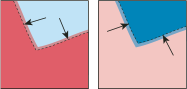

About trapping
Where colors printed from separate plates overlap or adjoin one another, press misregistration can cause gaps between colors on the final output. To compensate for potential gaps between colors in artwork, print shops use a technique called trapping to create a small area of overlap (called a trap) between two adjoining colors. You can use a separate, dedicated trapping program to create traps automatically, or you can use Illustrator to create traps manually.
There are two types of trap: a spread, in which a lighter object overlaps a darker background and seems to expand into the background; and a choke, in which a lighter background overlaps a darker object that falls within the background and seems to squeeze or reduce the object.

When overlapping painted objects share a common color, trapping may be unnecessary if the color that is common to both objects creates an automatic trap. For example, if two overlapping objects contain cyan as part of their CMYK values, any gap between them is covered by the cyan content of the object underneath.
Trapping type can present special problems. Avoid applying mixed process colors or tints of process colors to type at small point sizes, because any misregistration can make the text difficult to read. Likewise, trapping type at small point sizes can result in hard-to-read type. As with tint reduction, check with your print shop before trapping such type. For example, if you are printing black type on a colored background, simply overprinting the type onto the background may be enough.